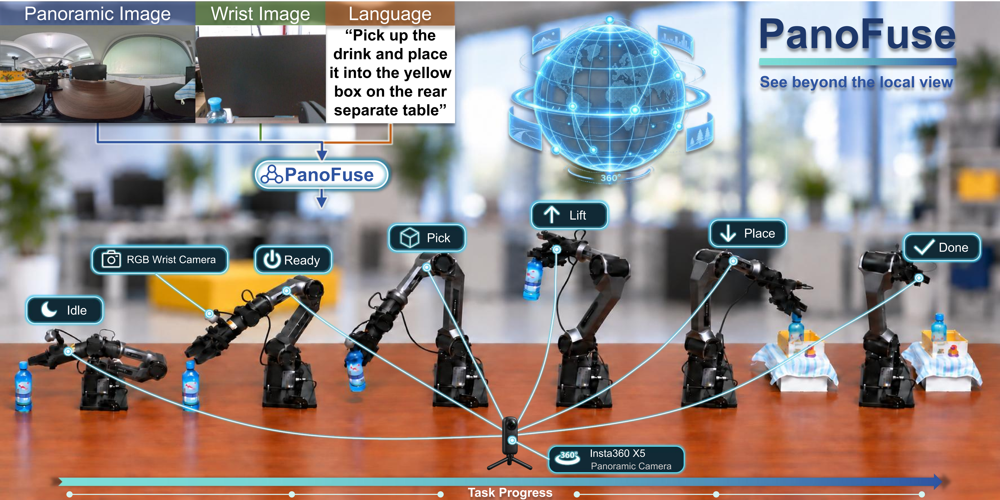
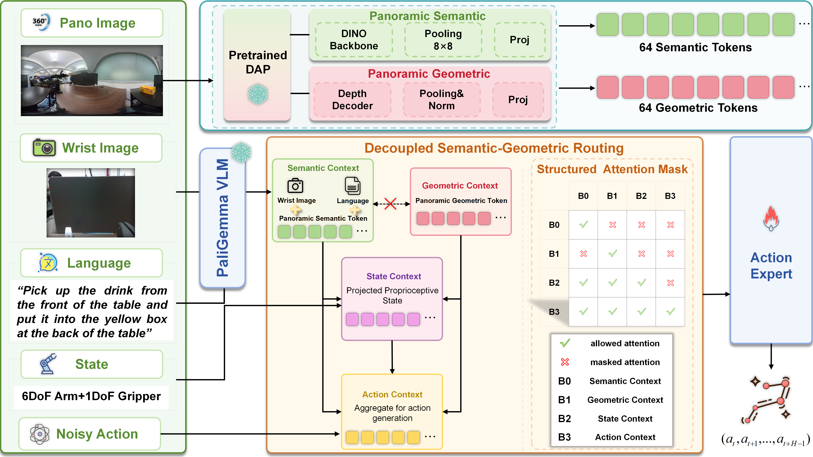
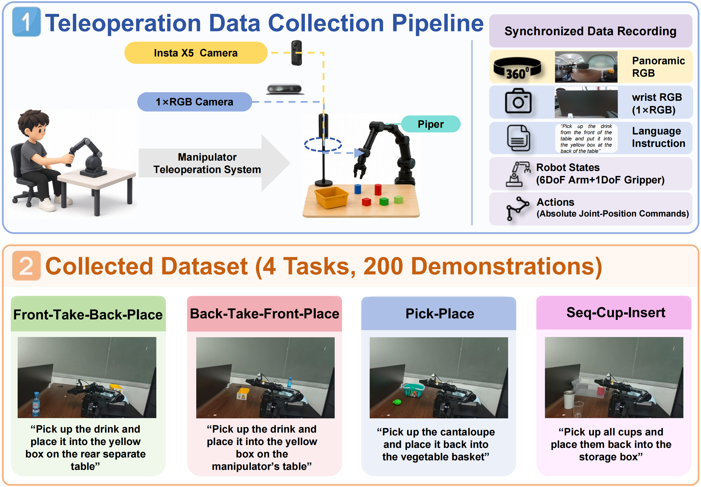
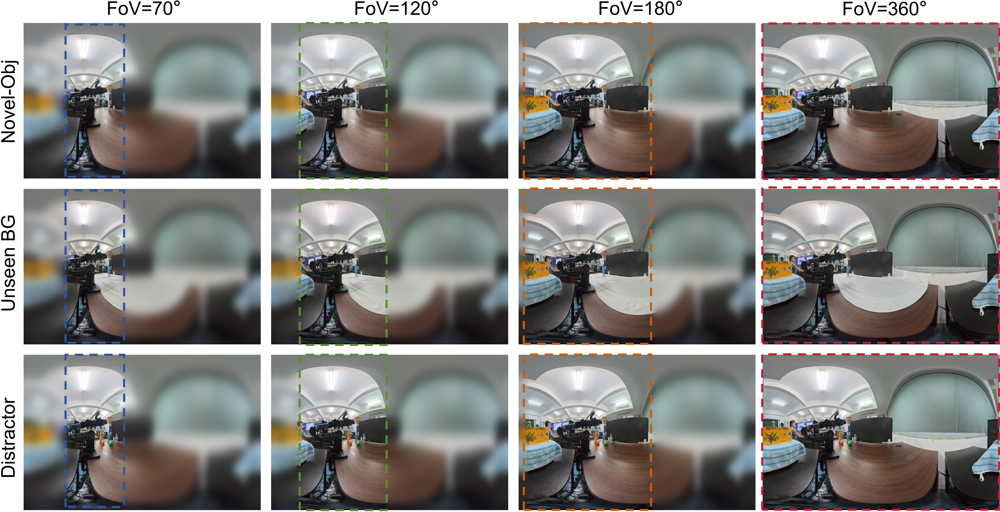

PanoFuse: Panorama-Enhanced Vision-Language-Action Learning with Decoupled Semantic-Geometric Routing
See beyond the local view.
Abstract
Vision-Language-Action (VLA) policies have shown promising performance in language-conditioned robotic manipulation, but conventional perspective cameras provide only limited fields of view and may miss global scene context under occlusion, distractors, and unseen environments. We propose PanoFuse, a panorama-enhanced VLA framework that complements local wrist-camera observations with global panoramic perception. A dedicated panoramic branch leverages a pretrained panoramic foundation model to extract complementary semantic and geometric representations. Rather than directly mixing these heterogeneous features, Decoupled Semantic-Geometric Routing (DSGR) maintains them as separate context streams and selectively routes them to downstream state and action representations through structured block-wise attention. We further develop a synchronized teleoperation pipeline and collect a real-world manipulation dataset containing panoramic RGB observations, wrist-view images, language instructions, robot states, and actions. Across seven evaluation settings, PanoFuse reaches an average success rate of 52.9% and shows consistent improvements under novel-object, unseen-background, and distractor-rich settings.
Overview

PanoFuse uses a wrist RGB camera for local manipulation detail and an Insta360 X5 panoramic camera for continuous 360° global context. The panoramic stream supports target acquisition, grasping, transfer, and placement across a long-horizon manipulation sequence.
Method
Panoramic semantic and geometric representations are extracted separately and selectively routed to downstream state and action representations.

Panoramic Representation
A frozen Depth Any Panoramas (DAP) model provides complementary semantic and geometric features from the equirectangular panoramic RGB observation.
64 + 64 Context Tokens
Semantic and geometric features are each pooled to an 8×8 grid and projected into the VLM embedding space.
DSGR
Structured block-wise attention keeps semantic and geometric streams separately contextualized while exposing both to downstream state and action blocks.
Teleoperation System & Dataset

Successful demonstrations
50 trajectories per task across four real-world tasks.
Synchronized timesteps
Panoramic RGB, wrist RGB, language, robot state, and action.
Control & recording rate
6-DoF arm joint positions plus a 1-DoF gripper.
Tasks
- Front-Take-Back-Place: transfer a drink from the front workspace to a yellow box on a separate rear table.
- Back-Take-Front-Place: transfer a drink from the rear workspace to the manipulator table.
- Pick-Place: pick a cantaloupe and return it to the vegetable basket.
- Seq-Cup-Insert: sequentially collect multiple cups and place them into a storage box.
Real-World Closed-Loop Evaluation

Average Success Rate
Across all seven evaluation settings.
Percentage Points
Over the strongest evaluated baseline average (π0-fast at 30.0%).
Evaluation Settings
Four standard tasks + three generalization settings.
| Method | F→B | B→F | Pick-Place | Cup-Insert | Novel Obj. | Unseen BG. | Distractor | Avg. |
|---|---|---|---|---|---|---|---|---|
| π0-base | 40.0% | 50.0% | 50.0% | 60.0% | 0.0% | 0.0% | 0.0% | 28.6% |
| π0-base w/ Pano | 30.0% | 20.0% | 20.0% | 20.0% | 0.0% | 0.0% | 0.0% | 12.9% |
| π0-fast | 50.0% | 60.0% | 50.0% | 50.0% | 0.0% | 0.0% | 0.0% | 30.0% |
| π0-fast w/ Pano | 20.0% | 20.0% | 10.0% | 20.0% | 0.0% | 0.0% | 0.0% | 10.0% |
| PanoFuse (Ours) | 50.0% | 70.0% | 60.0% | 60.0% | 50.0% | 40.0% | 40.0% | 52.9% |
Generalization & Field-of-View Ablation

Novel Object
50.0% success with the full 360° panorama.
Unseen Background
40.0% success with the full 360° panorama.
Distractor
40.0% success with the full 360° panorama.
| Panoramic FoV | Novel Obj. | Unseen BG. | Distractor | Avg. |
|---|---|---|---|---|
| 70° | 0.0% | 10.0% | 10.0% | 6.7% |
| 120° | 0.0% | 20.0% | 10.0% | 10.0% |
| 180° | 10.0% | 40.0% | 30.0% | 26.7% |
| 360° | 50.0% | 40.0% | 40.0% | 43.3% |
Ablation Studies
Panoramic Representation
| Method | Avg. |
|---|---|
| Semantic Only | 22.5% |
| Geometric Only | 20.0% |
| PanoFuse | 60.0% |
Attention Routing
| Method | Avg. |
|---|---|
| Unrestricted Attention | 0.0% |
| Partial Block-wise | 10.0% |
| DSGR (Ours) | 60.0% |
The ablations show that panoramic semantic and geometric representations are complementary, and that structured information routing is critical for effective multimodal conditioning.
Paper
BibTeX
@inproceedings{xu2027panofuse,
title = {PanoFuse: Panorama-Enhanced Vision-Language-Action Learning with Decoupled Semantic-Geometric Routing},
author = {Xu, Peng and Lin, Haoran and Jia, Wanjun and Luo, Kai and Chen, Wenrui and Li, Zhiyong and Yang, Kailun},
booktitle = {IEEE International Conference on Robotics and Automation (ICRA)},
year = {2027},
url = {https://xux-hnu.github.io/PanoFuse/}
}